← Index · ← Previous · Next →
Authors: Lorenzo Migliorelli, Giovanni Dematteis, Sergio Chibbaro, Miguel Onorato
Type: theory · Category: statistical mechanics · PDF: https://arxiv.org/pdf/2605.24268v1
Analysis basis: full PDF text, analyzed in chunks
Topic relevance: non-equilibrium dynamics 2/5 · scars & prethermalization 2/5
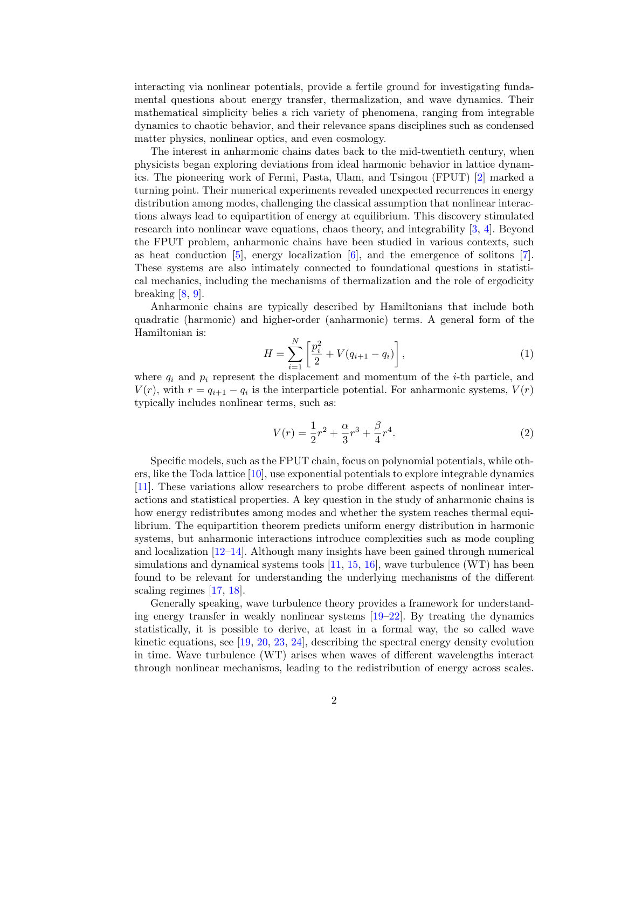
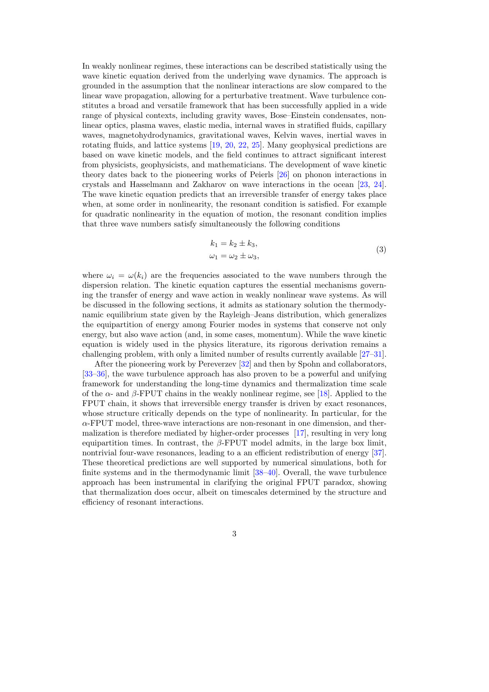
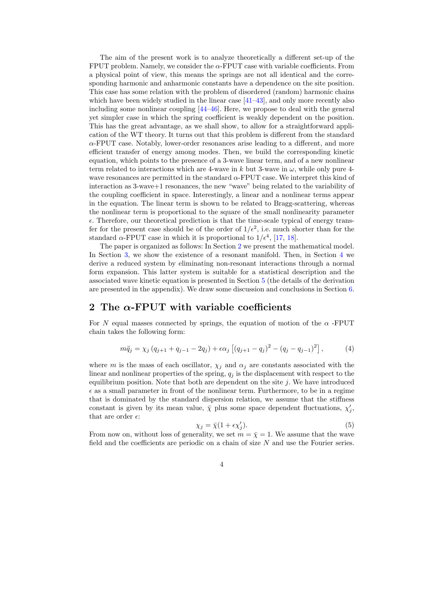
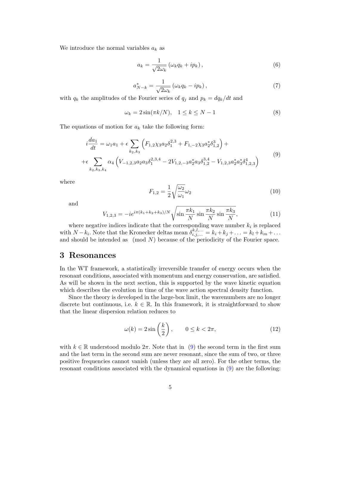
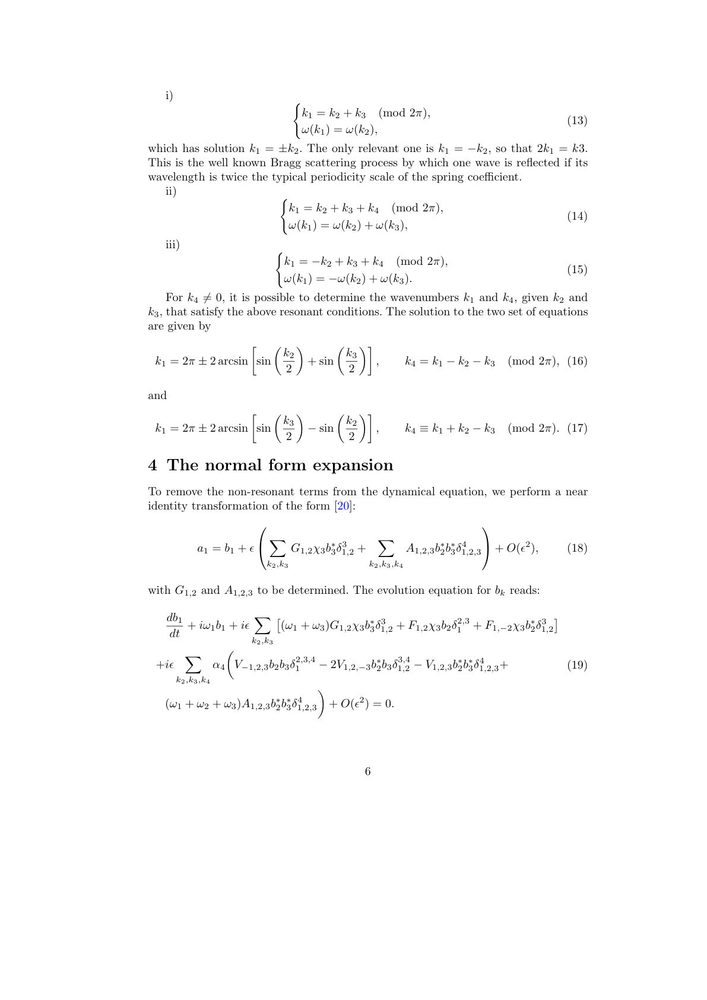
Summary. This paper explores how spatial variations in the properties of a nonlinear 1D chain can accelerate the process of thermalization. By using wave turbulence theory, the authors demonstrate that site-dependent coefficients create new resonance channels that allow energy to redistribute much faster than in a uniform lattice.
Why it may be interesting. not directly relevant
Main problem. Investigating how spatial modulation of spring stiffness and nonlinear coefficients in an alpha-FPUT lattice affects energy transfer, resonant manifolds, and the thermalization timescale.
Main result. The derivation of a new wave kinetic equation shows that spatial modulation creates a non-trivial resonant manifold, leading to significantly faster thermalization (1/epsilon^2) compared to the standard case (1/epsilon^4) and introducing a Bragg-scattering mechanism.
Method. Wave Turbulence theory using a perturbative treatment, normal form expansion (near-identity transformation), and Wick decomposition in the large-box limit.
Model / system. A one-dimensional alpha-Fermi-Pasta-Ulam-Tsingou (alpha-FPUT) lattice with site-dependent spring stiffness and nonlinear coefficients.
Key observables. Wave-action spectral density function, spectral energy density evolution, and thermalization timescales.
Important parameters / regimes. Small nonlinearity parameter epsilon, site-dependent stiffness chi_j, and nonlinear coefficient alpha_j.
Assumptions / limitations. Weak nonlinearity (epsilon << 1), weak spatial modulation of coefficients (order epsilon), and the large-box limit (L -> infinity).
Paper structure. The paper introduces the site-dependent alpha-FPUT model, applies Wave Turbulence theory and normal form expansion to derive a modified wave kinetic equation, analyzes the resulting resonant manifolds (including Bragg scattering), and discusses the implications for thermalization rates and the approach to the Rayleigh-Jeans equilibrium.
The wave turbulence framework has proven to be an effective tool for analyzing certain features of nonlinear energy transfer in one-dimensional nonlinear chains. In this work, we extend this approach to the $α$-FPUT problem when the spring stiffness $χ$ and the nonlinear coefficient $α$ are site-dependent. Although three-wave interactions are non-resonant for constant coefficients, their spatial modulation gives rise to a non-trivial resonant manifold. In this framework, we derive a new kinetic equation that suggests the possibility of substantially faster thermalization with respect to the constant coefficient case. The new kinetic equation includes also an extra term that can be associated to the Bragg-scattering mechanism, which promotes the isotropization of the wave-action spectral density function.
Authors: Naveen Kumar, Rahul Chhimpa, Avinash Chand Yadav
Type: theory · Category: statistical mechanics · PDF: https://arxiv.org/pdf/2605.25884v1
Analysis basis: full PDF text, analyzed in chunks
Topic relevance: non-equilibrium dynamics 2/5 · non-equilibrium universality 2/5
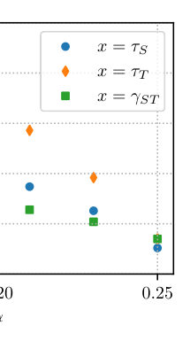
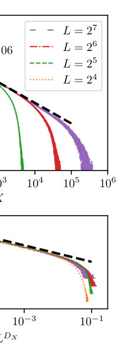
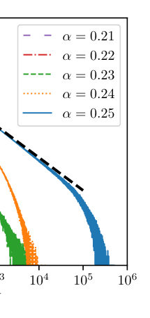
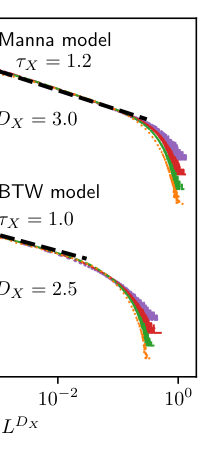
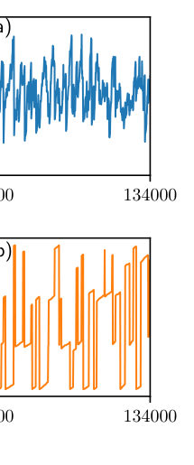
Summary. This paper explores new scaling properties in the OFC model of earthquakes, finding that a power-law distribution exists for the difference between avalanche size and area only in the conservative limit. It also demonstrates how local dissipation fundamentally changes the dynamic exponent of stress fluctuations from ballistic to diffusive behavior.
Why it may be interesting. not directly relevant
Main problem. The study investigates new scaling features in the Olami-Feder-Christensen (OFC) model, specifically the probability distribution of the difference between avalanche size and area, and the power spectra of stress fluctuations.
Main result. In the conservative OFC model, the difference between avalanche size and area follows a power-law distribution, a feature that vanishes in the dissipative regime. Additionally, the dynamic exponent shifts from nearly ballistic to diffusive behavior as dissipation increases, with local stress exhibiting 1/f noise.
Method. Numerical simulations using an efficient algorithm with active site tracking and 1D array conversion, combined with finite-size scaling (FSS) analysis and power spectra analysis via Fast Fourier Transform (FFT).
Model / system. The Olami-Feder-Christensen (OFC) model, a cellular automata model of seismic activity on a 2D square lattice with open boundary conditions, which exhibits self-organized criticality.
Key observables. Avalanche size (S), area (A), difference (X = S - A), duration (T), local and total stress fluctuations, and power spectra.
Important parameters / regimes. Dissipation parameter (alpha), where alpha = 0.25 is locally conservative and alpha < 0.25 is locally dissipative.
Assumptions / limitations. The model assumes uniform driving and specific redistribution rules that distinguish it from standard sandpile models.
Figures summary. Figure 1 shows critical exponents as a function of alpha; Figure 2 shows the probability distribution and data collapse of X; Figure 3 shows the impact of decreasing alpha on P(X, L); Figure 4 compares X scaling in BTW and Manna models; Figures 5 and 6 show stress signals and their power spectra.
Paper structure. The paper introduces the OFC model and its parameters, presents the analysis of the size-area difference (X), compares these findings to BTW and Manna models, analyzes the power spectra of stress fluctuations, and concludes with the implications of dissipation on dynamics.
We consider the Olami-Feder-Christensen (OFC) model on a square two-dimensional lattice with open boundary conditions. The model exhibits self-organized criticality and explains the Gutenberg-Richter law observed for earthquakes. A parameter $α$ controls the level of local dissipation: $α< 0.25$ corresponds to locally dissipative and $α= 0.25$ marks locally conservative dynamics. The avalanche size distribution follows a decaying power-law, with a non-universal critical exponent. Here, we examine the probability distribution of the difference between avalanche size and area. This quantity remains unexplored despite being of significant interest in earthquakes. We find a power-law with a scaling exponent close to one in the conservative OFC model. The scaling feature vanishes even for the physically relevant case $α= 0.21$. To examine the robustness of such features, we also examine the same quantity in the BTW and Manna sandpile models on a square lattice. We find that the power-law behavior survives for these systems due to locally conservative dynamics. We further examine the local and total stress fluctuations in the OFC model for both locally conservative and dissipative dynamics. The finite-size scaling analysis of the power spectra for the stress fluctuations reveals qualitatively the same but quantitatively significantly different behavior. The dynamic exponent describing the divergence of the correlation time with system size changes from nearly ballistic in the conservative to diffusive behavior in the locally dissipative dynamics with $α= 0.21$. The local stress also exhibits a signature of nearly canonical $1/f$ noise in the intermediate regime, and $1/f^2$-type scaling dominates the high-frequency regime.
Authors: Ying-Bo Gao, Fu-Quan Dou
Type: theory · Category: quantum information and computing · PDF: https://arxiv.org/pdf/2605.24935v1
Analysis basis: full PDF text, analyzed in chunks
Topic relevance: methods for driven-dissipative 2/5 · non-equilibrium dynamics 2/5
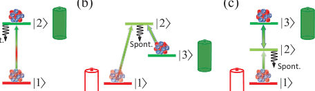
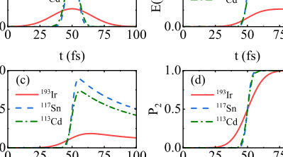
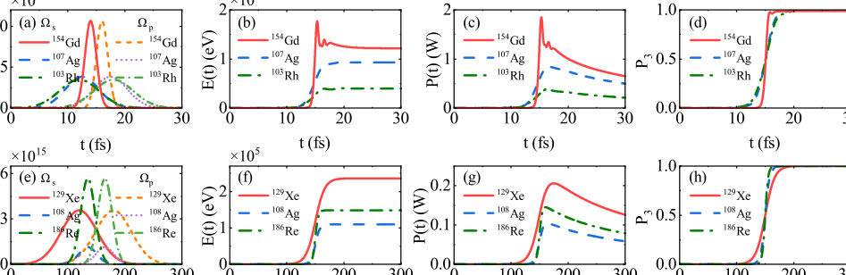
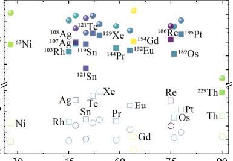
Summary. The paper proposes a new class of quantum batteries using nuclear isomers to achieve unprecedented energy density and power. By utilizing X-ray Free Electron Lasers to drive transitions in nuclear systems, these batteries can store much higher energy levels than atomic versions and maintain that energy for much longer periods.
Why it may be interesting. It presents a novel application of nuclear physics to quantum thermodynamics, demonstrating how extremely long-lived metastable states can overcome the decoherence and energy-density limits typical of atomic-scale quantum batteries.
Main problem. Existing quantum batteries based on atomic or molecular systems suffer from low energy density and rapid self-discharging due to short excited-state lifetimes.
Main result. Nuclear Isomer Quantum Batteries (NIQBs) can achieve energy storage and charging power enhancements of up to 10^6 and 10^11, respectively, compared to atomic systems, with lifetimes extending up to 10^5 years.
Method. The study uses a density matrix approach with a master equation to model coherent population transfer (NCPT) and STIRAP driven by X-ray Free Electron Laser (XFEL) pulses.
Model / system. The system consists of nuclear ensembles in two-level, Lambda-type, and ladder-type configurations using various isotopes (e.g., 193Ir, 117Sn, 129Xe). The Hamiltonian includes nuclear energy levels and interaction with an external XFEL field.
Key observables. Stored energy (E), average charging power (P), ergotropy (W), energy extraction ratio (R), and system purity (P).
Important parameters / regimes. Energy scales of 10^5 eV to hundreds of keV; charging power in the Watt scale; interaction times on the femtosecond scale; lifetimes from microseconds to 10^5 years.
Assumptions / limitations. The framework assumes the use of XFEL as a charger and focuses on regimes where spontaneous emission is negligible for most isotopes due to long isomeric lifetimes.
Figures summary. Figure 1 shows schematic setups for two-level, Lambda, and ladder-type NIQBs. Supplemental figures include contour plots of energy and extraction ratio versus laser intensity and energy extraction plots.
Paper structure. Introduction of the NIQB concept, description of the nuclear energy level configurations, mathematical framework for charging dynamics and energy metrics, comparative analysis between nuclear and atomic systems, and discussion of optimization and limitations.
Quantum batteries (QBs) -- quantum devices governed by the principles of quantum mechanics -- hold great promise for next-generation energy storage. However, most existing research efforts focus on atomic or molecular systems featuring low-energy and short-lived energy levels, leaving the exploitation of high-energy, ultra-stable nuclear energy levels for energy storage as a critical unaddressed challenge. Here, we propose an innovative design of referred to as nuclear isomer quantum batteries (NIQBs), whose energy storage unit is typically composed of two-level and three-level nuclei incorporating nuclear isomers. The charging dynamics is driven by the interaction between the nuclear system and x-ray free electron laser (XFEL). Compared to QBs based on atomic systems, NIQBs deliver substantial performance enhancements, with stored energy and average charging power enhanced by factors of $10^{1}$--$10^{6}$ and $10^{6}$--$10^{11}$, respectively, and a markedly extended lifetime range spanning from microseconds to $10^5$ years. Notably, the vast majority of NIQBs enable complete energy extraction as their excited-state lifetimes exceed the laser-nuclear interaction time, rendering spontaneous emission negligible. The proposed NIQBs framework is compatible with diverse nuclear systems, enabling tailored nucleus selection for varied operating conditions. Our results provide a feasible pathway toward realizing high-performance QBs with superior energy-storage efficiency.
Authors: Ivan Ryger, Terry Brown, Dina S. Eissa, Chen-Ting Liao
Type: experiment · Category: other · PDF: https://arxiv.org/pdf/2605.24199v1
Analysis basis: full PDF text, analyzed in chunks
Topic relevance: quantum measurements 2/5 · quantum optics experiment 2/5
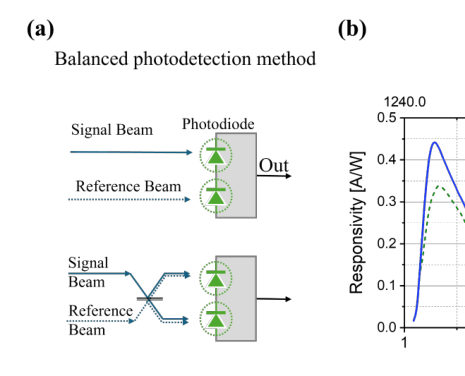
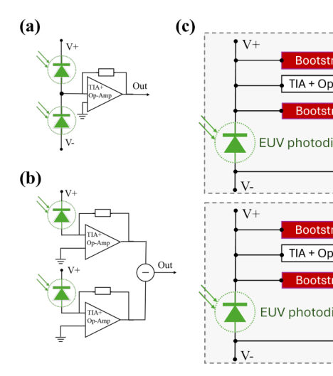
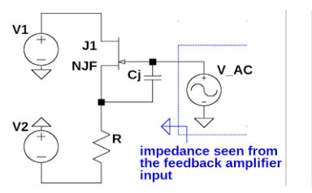
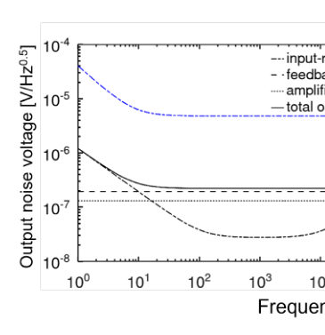
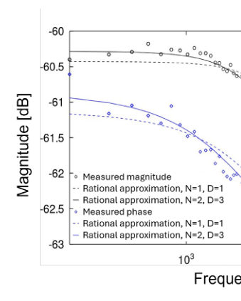
Summary. This paper presents a new electronic architecture for photodetectors that allows for high-speed, low-noise measurements in the EUV and soft X-ray regimes. By using a JFET-based bootstrapping technique, the researchers overcame the bandwidth limitations typically caused by high detector capacitance. This enables more sensitive quantum-noise-limited measurements for applications in X-ray spectroscopy and EUV lithography.
Why it may be interesting. not directly relevant
Main problem. The high junction capacitance of large-area silicon photodiodes in the EUV and soft X-ray regimes creates a bandwidth-noise trade-off that limits high-speed, low-noise detection.
Main result. The authors developed a wideband bootstrapped transimpedance amplifier architecture that achieves a six-fold extension in signal-to-noise limited bandwidth and a noise floor of 13 fA/sqrt(Hz).
Method. The design uses a JFET-based bootstrapping network to isolate photodiode capacitance and a grounded field plate to tune parasitic capacitance for high common-mode rejection.
Model / system. The experimental platform consists of a balanced photodetector system using silicon-based AXUV and SXUV photodiodes, featuring a bootstrapped transimpedance amplifier (TIA) with a JFET interface and an active load.
Key observables. Input-referred noise floor, signal-to-noise limited bandwidth, Common-Mode Rejection Ratio (CMRR), and spectral responsivity.
Important parameters / regimes. Spectral range from 1 nm to 1,100 nm, noise floor of 13 fA/sqrt(Hz), CMRR exceeding 30 dB up to 100 kHz, and junction capacitance reduction via reverse biasing.
Assumptions / limitations. Assumes performance in the EUV-SXR range is comparable to optical results if readout conditions are maintained; notes that thermal management is required for long-term stability.
Figures summary. Fig 1 shows the concept of balanced detection and spectral responsivity; Fig 2 compares detector architectures and shows the circuit diagram; Fig 10/11 illustrate the field plate mechanism and the resulting CMRR performance.
Paper structure. The paper introduces the detection gap in short-wavelength regimes, details the electronic architecture of the bootstrapped TIA, describes the capacitance management techniques (reverse bias and field plate), presents experimental noise and bandwidth characterization, and discusses thermal and practical implementation challenges.
The rapid development of coherent short-wavelength light sources in the extreme ultraviolet (EUV) and soft X-ray (SXR) regimes has created a growing need for advanced optoelectronic detection capabilities, particularly for quantum-noise-limited measurements, microelectronics and semiconductor metrology, and emerging quantum information applications. However, extending balanced photodetection to these wavelength regimes is severely hindered by a fundamental bandwidth-noise trade-off imposed by the exceptionally large junction capacitance of EUV-SXR silicon photodiodes. Here, we report a novel wideband photoreceiver architecture that overcomes this bottleneck via a bootstrapped transimpedance amplifier design. By leveraging a low-noise junction field-effect transistor interface, we effectively isolate the photodiode capacitance and suppress the apparent input capacitance seen by the core amplifier. Combined with active compensation of parasitic feedback reactance, this architecture mitigates the conventional trade-off between detector active area and signal bandwidth. Experimentally, we achieved a system-level input-referred noise floor of 13 $fA/\sqrt{Hz}$, closely approaching theoretical thermal limits. Furthermore, we achieved a six-fold extension in signal-to-noise limited bandwidth and, through the implementation of a novel grounded field plate, demonstrated a common-mode rejection ratio (CMRR) exceeding 30 dB up to 100 kHz. This highly scalable, silicon-based architecture effectively bridges the short-wavelength detection gap, establishing a robust experimental platform for next-generation quantum-noise-limited and quantum-enhanced X-ray measurement, as well as ultra-sensitive inspection and metrology applications in high-numerical-aperture EUV lithography.
Authors: William D. Brackett, Zachary M. Sherman, Felix Lehmkühler, Thomas M. Truskett, Delia J. Milliron
Type: both · Category: disordered systems and neural networks · PDF: https://arxiv.org/pdf/2605.26083v1
Analysis basis: full PDF text, analyzed in chunks
Topic relevance: non-equilibrium dynamics 2/5 · non-equilibrium universality 1/5
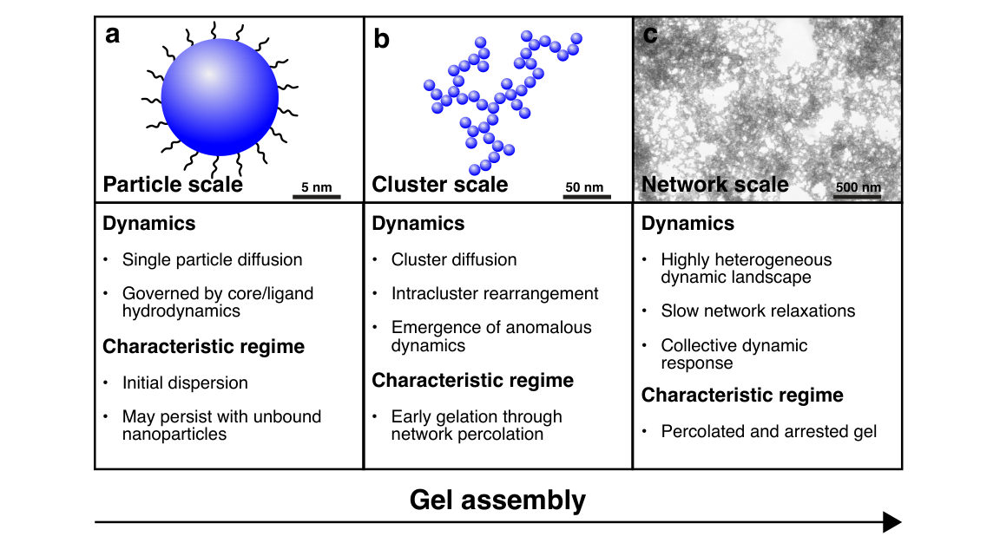
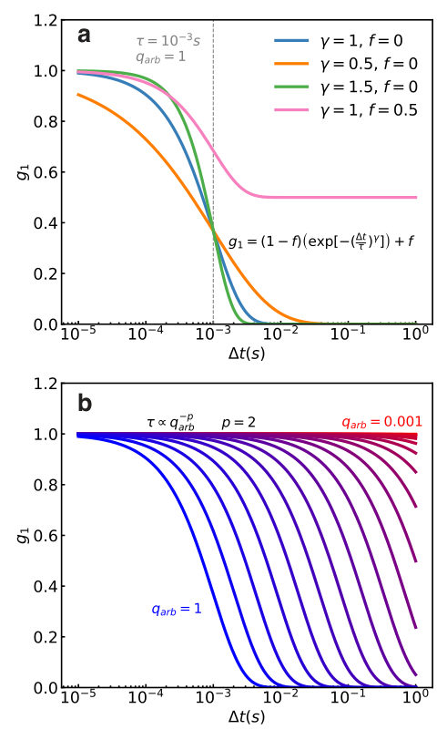
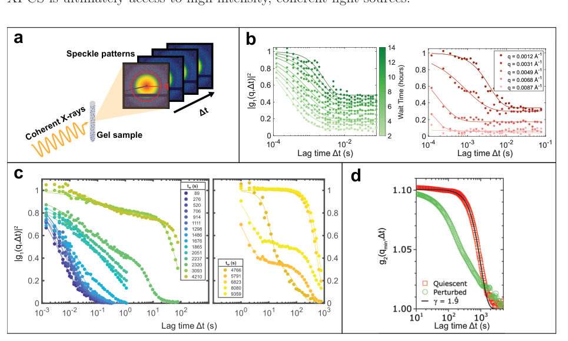
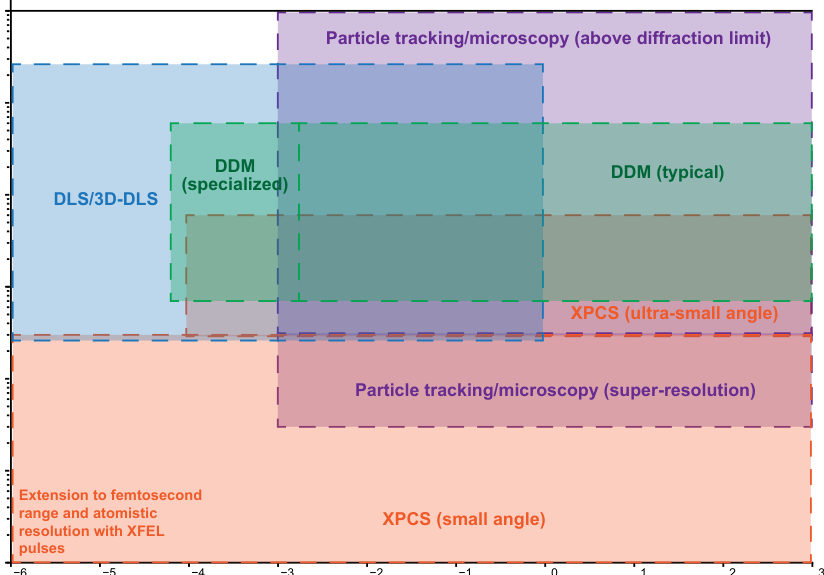
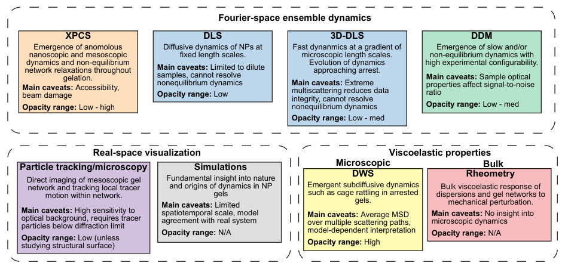
Summary. This perspective paper outlines how to bridge the gap between nanoscopic particle interactions and macroscopic gel properties. It emphasizes the integration of X-ray Photon Correlation Spectroscopy with rheology and simulations to characterize the multi-scale dynamics of nanoparticle networks. The goal is to transition from observing gelation to the intentional design of adaptive, programmable soft materials.
Why it may be interesting. The study of structural arrest, anomalous diffusion, and the emergence of heterogeneous dynamics in these classical systems provides a macroscopic analog to many-body localization and non-equilibrium phase transitions in quantum systems.
Main problem. The lack of a unified understanding of how nanoscopic interactions and hierarchical processes across multiple length and time scales translate into the macroscopic mechanical and structural properties of colloidal nanoparticle gels.
Main result. The paper proposes a framework for moving from descriptive studies to the programmable design of nanoparticle gels by integrating multi-scale dynamics (particle, cluster, and network scales) using advanced X-ray techniques and complementary probes.
Method. The authors discuss the use of X-ray Photon Correlation Spectroscopy (XPCS) and in situ rheo-XPCS to probe nanoscopic motion, alongside complementary techniques like DLS, microscopy, and coarse-grained simulations.
Model / system. The physical system consists of colloidal nanoparticle (NP) gels, including metallic, semiconductor, or insulating NPs, which can form fractal networks (DLCA/RLCA), attractive/repulsive glasses, or depletion gels through tunable interparticle interactions.
Key observables. Intensity correlation functions (g2, g1), intermediate scattering function (F(q, delta t)), relaxation time (tau), stretching/compression exponent (gamma), and nonergodicity factor (f).
Important parameters / regimes. Nanoparticle size, ligand grafting density, surface charge, volume fraction, bond strength, and spatiotemporal scales ranging from 5 nm to 500 nm.
Assumptions / limitations. Assumes Gaussian electric field distributions for the Siegert relation and assumes ergodicity in certain regimes, while explicitly addressing nonergodic/aging dynamics.
Figures summary. Figure 1 illustrates the hierarchy of NP gel assembly from single particle diffusion to cluster rearrangement and network-wide relaxation. Figure 2 shows calculated field correlation functions for different dynamics (anomalous, localized) and the scaling of relaxation time with the wavevector.
Paper structure. The paper begins by defining the scientific problem of multi-scale dynamics in NP gels, describes the physical hierarchy of the system, details the experimental and computational platforms (specifically XPCS), establishes the mathematical framework for analyzing scattering data, and concludes with a perspective on the future of programmable soft matter design.
Colloidal gels assembled from nanoparticles (NPs) are a versatile class of soft network-based materials capable of rich dynamic, mechanical, and even optical or magnetic responses to stimuli. Understanding how their hierarchically organized processes relate to macroscopic network properties remains a broad and unresolved problem in soft matter physics. The mechanisms of gel formation can depend sensitively on the pathway and the nature of NP interactions, thus far preventing a unified theoretical bridge between nanoscopic interactions and structural evolution and network dynamics. Indirect measurement of dynamics using light-scattering techniques provides an experimental means to quantify underlying particle and network motion. X-ray photon correlation spectroscopy (XPCS) has emerged as a powerful tool for probing nanoscopic motion in nanoparticle gels, but alone cannot resolve the full spatiotemporal spectrum of dynamics that drive gelation, aging, and network mechanical properties. While in situ rheo-XPCS enables simultaneous probing of nanoscale and bulk mechanical responses, complementary light scattering, microscopy, or simulations can extend spatiotemporal characterization and, consequently, understanding of NP gel network physics. Implementing a modular model platform with tunable primary nanoparticle features allows systematic variation of nanoscopic characteristics that drive emergent gel responses and inform the development of theoretical models for a wide range of soft, dynamic, nanostructured materials. The rapid expansion of XPCS capabilities at fourth-generation light sources, combined with complementary tools and robust model systems, positions the field to move beyond descriptive fundamental studies toward the design of nanoparticle gels with adaptive and programmable behaviors.
Authors: Rafael Duarte Marcelino, Julio Smanioto Garcia, Matheus Rufino
Type: theory · Category: quantum information and computing · PDF: https://arxiv.org/pdf/2605.24230v1
Analysis basis: full PDF text, analyzed in chunks
Topic relevance: quantum measurements 2/5 · entanglement & information structure 1/5
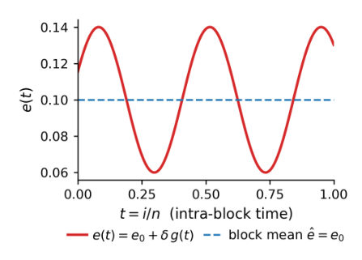
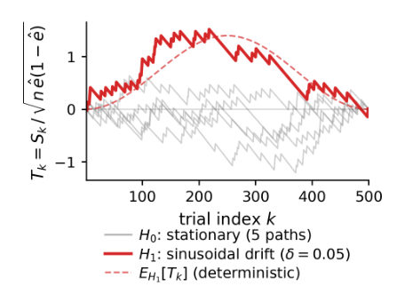
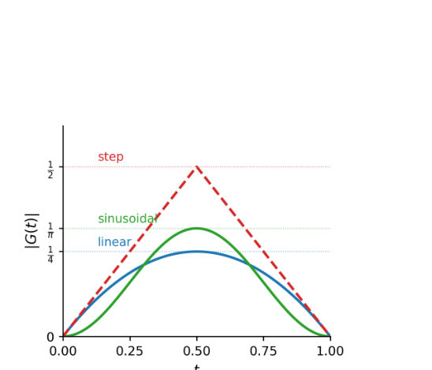
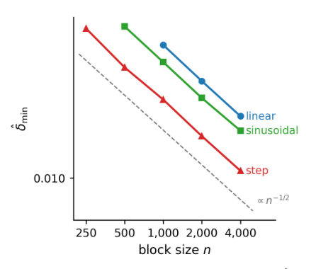
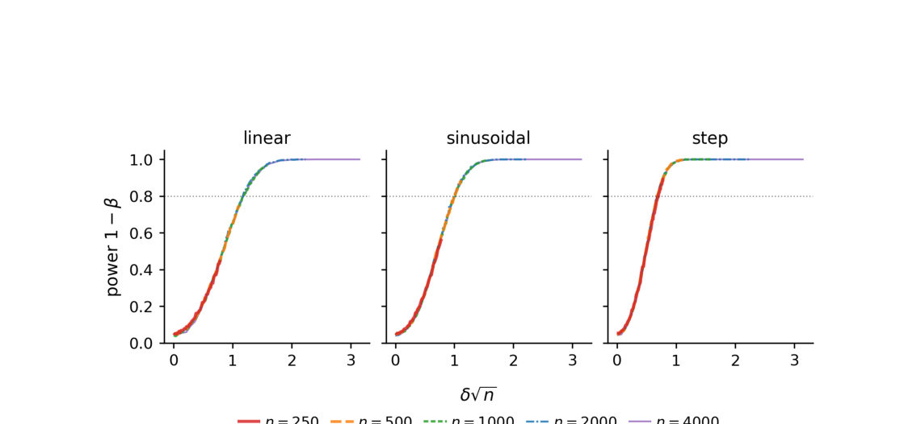
Summary. This paper establishes the fundamental statistical limits for detecting temporal fluctuations in QKD error rates that do not change the overall average error. It proves that the minimum detectable drift amplitude scales with the square root of the block size and shows that a CUSUM-based monitoring approach is optimal for this task.
Why it may be interesting. not directly relevant
Main problem. Determining the statistical limits for detecting intra-block temporal drift in entanglement-based Quantum Key Distribution (QKD) where the drift is mean-preserving and thus invisible to global-average error rate tests.
Main result. The authors derive a minimax optimal scaling for the minimum detectable drift amplitude, finding that delta_min = Theta(n^{-1/2}), and demonstrate that a calibrated CUSUM statistic achieves this rate.
Method. The study uses a minimax hypothesis-testing framework, applying the functional Central Limit Theorem and Donsker's theorem for the upper bound and Kullback-Leibler divergence for the lower bound, verified via Monte Carlo simulations.
Model / system. The system is an entanglement-based QKD protocol (E91-type) where the error rate is modeled as a sequence of Bernoulli trials subject to mean-preserving temporal perturbations (linear, sinusoidal, or step profiles).
Key observables. Quantum Bit Error Rate (QBER), Bell-violation statistics, and the partial-sum process (S_k).
Important parameters / regimes. Block size (n), baseline error rate (e_0), significance level (alpha), target power (1-beta), and the signal functional A(g).
Assumptions / limitations. The drift is assumed to be mean-preserving (the integral of the perturbation over the block is zero) and constrained by a Lipschitz bound for physical regularity.
Figures summary. Figure 1 shows drift trajectories; Figure 2 visualizes the partial-sum process; Figure 6 illustrates the statistical trade-off between estimation variance and drift resolution.
Paper structure. The paper introduces the problem of intra-block drift, defines the mathematical model and drift classes, provides theoretical proofs for the minimax bounds, presents numerical simulations for different drift profiles, and concludes with a discussion on the fundamental resolution limits.
We study the statistical detectability of intra-block temporal drift in finite-key entanglement-based quantum key distribution, with particular relevance to E91-type parameter estimation and monitoring. Drift is modeled as a mean-preserving Lipschitz perturbation of Bernoulli observables, capturing structured temporal variation that is invisible to global-average tests. For a block of size $n$ and confidence levels $(α,β)$, we formulate a minimax hypothesis-testing problem and define the minimal detectable amplitude. We derive matching lower and upper bounds yielding $δ_{\min}(n,α,β)=Θ(n^{-1/2})$: if $nδ^2 \to 0$, no level-$α$ procedure can guarantee nontrivial uniform power over the admissible drift class, whereas a calibrated CUSUM statistic detects drift at the matching scale. Explicit constants for linear, sinusoidal, and step profiles, together with simulations, confirm the predicted scaling collapse. The result quantifies a finite-block monitoring-resolution limit and is distinct from composable security certification.
Authors: V. S. Morales-Salgado
Type: theory · Category: other · PDF: https://arxiv.org/pdf/2605.24373v1
Analysis basis: full PDF text, analyzed in chunks
Topic relevance: Keldysh / 2PI / non-Gaussian methods 2/5 · entanglement & information structure 1/5
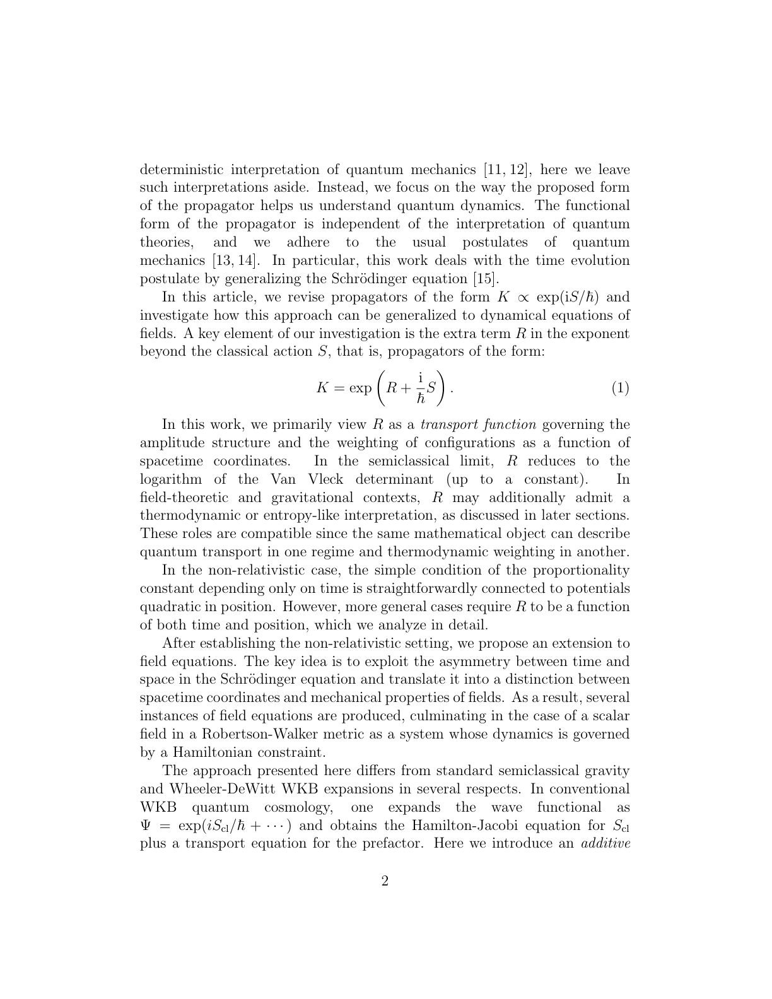
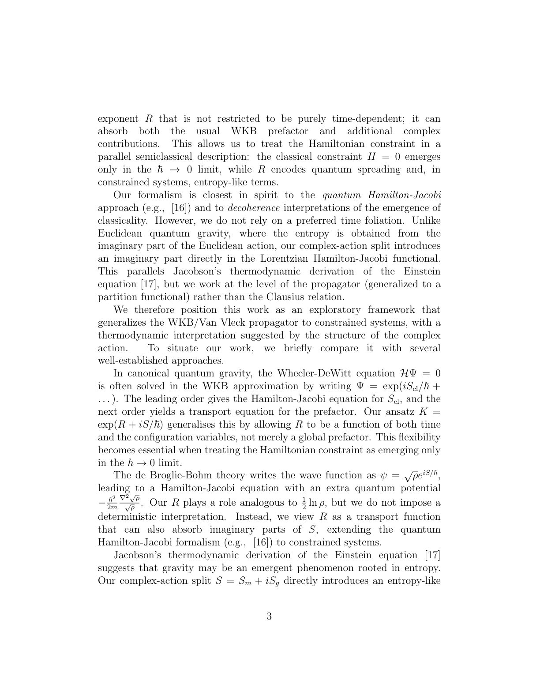
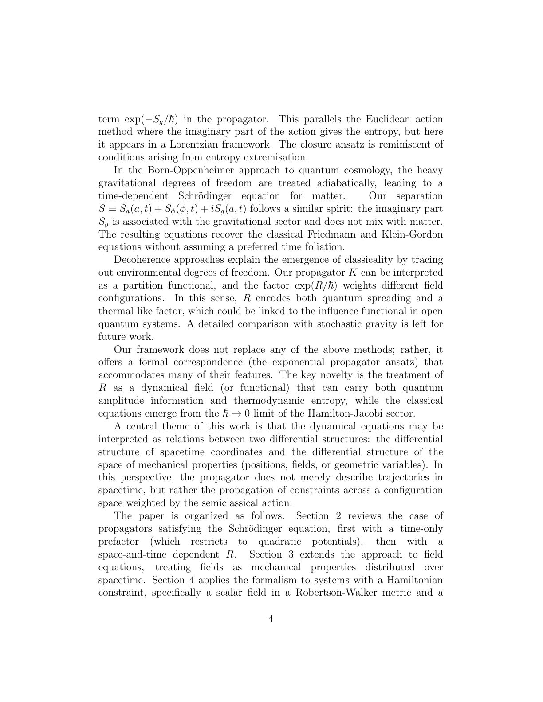
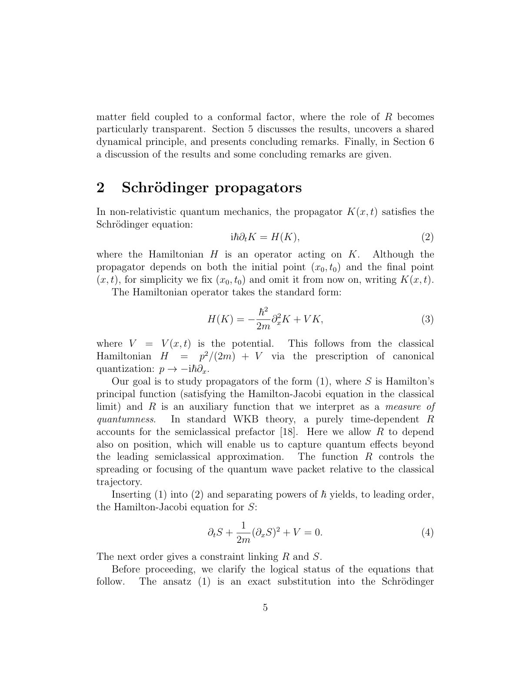
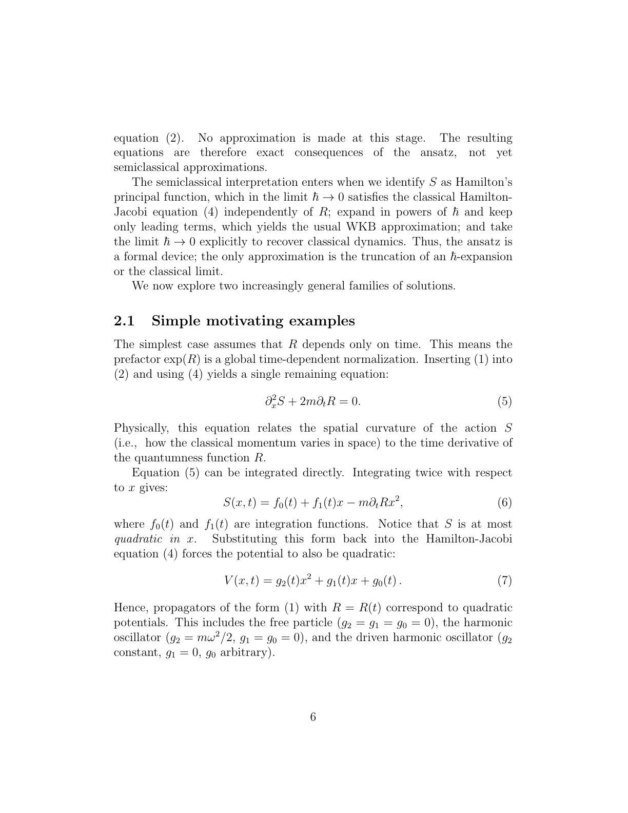
Summary. This paper proposes a generalized semiclassical propagator that uses an additional real exponent to represent quantumness and entropy. It demonstrates that this formalism can unify quantum dynamics, field theory, and the thermodynamic interpretation of gravity in cosmological models.
Why it may be interesting. not directly relevant
Main problem. Investigating a generalized semiclassical ansatz for the quantum propagator where an additive exponent R is introduced to serve as a measure of quantumness and entropy.
Main result. The framework successfully recovers classical dynamics (Hamilton-Jacobi, Friedmann, and Klein-Gordon equations) in the limit h -> 0 and provides a link between the imaginary part of the action and gravitational entropy.
Method. A semiclassical expansion of a generalized exponential ansatz K = exp(R + iS/h) applied to Schrödinger, Klein-Gordon, and Dirac equations, as well as minisuperspace models.
Model / system. The study covers non-relativistic quantum mechanics (harmonic oscillators), quantum field theory (scalar and Dirac fields), and quantum cosmology (Robertson-Walker minisuperspace).
Key observables. The quantumness function R, the classical action S, and the functional momentum density.
Important parameters / regimes. The reduced Planck constant h, the scale factor a, the cosmological constant Lambda, and the semiclassical limit h -> 0.
Assumptions / limitations. The classical action S is assumed to satisfy the Hamilton-Jacobi equation, and the expansion is truncated at the leading order in h.
Paper structure. The paper begins with non-relativistic particle models, extends the formalism to field theories (scalar and spinor), applies the ansatz to constrained cosmological systems, and concludes with a conceptual discussion on the thermodynamic connection to gravity.
This work explores the non-relativistic quantum propagator $K(x,t)$ as a solution of the Schrödinger equation. We suppose that the propagator takes the form ${\rm exp}\left(\frac{\mathrm{i}}{\hbar}S+R\right)$, generalizing the usual WKB ansatz by allowing an additive exponent $R$ whose role as a measure of quantumness is investigated. Since $S$ is subject to the assumption that it is a solution of the Hamilton-Jacobi equation, here we are further interested in the role of $R$ and its interpretation as a measure of quantumness. Several systems are studied as concrete examples to illustrate this approach. Furthermore, a proposal to generalize it for fields is put forward. This is tested for some simple systems. Finally, the possibilities to use this approach for the case of systems whose dynamics are controlled by the Hamiltonian constraint are analyzed.
Authors: Hiroyuki Tajima, Yuta Sekino, Hiroshi Funaki, Shota Kisaka, Nobutoshi Yasutake, Mamoru Matsuo
Type: theory · Category: other · PDF: https://arxiv.org/pdf/2605.25067v1
Analysis basis: full PDF text, analyzed in chunks
Topic relevance: Keldysh / 2PI / non-Gaussian methods 2/5 · non-equilibrium dynamics 1/5
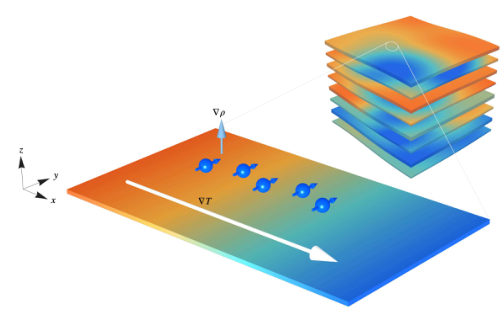
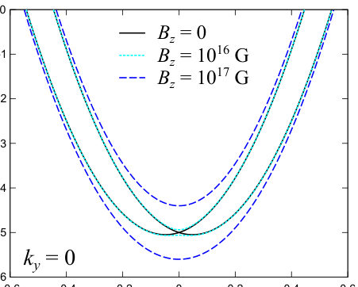
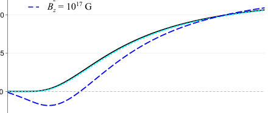
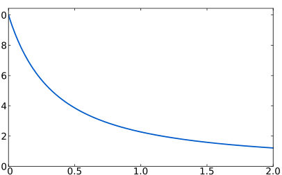
Summary. This paper explores how the density gradients at the surface of nuclear pasta in neutron stars create a Rashba-type spin-orbit coupling. It shows that temperature gradients can drive spin polarization via a mechanism analogous to the Rashba-Edelstein effect in spintronics. This provides a new way to understand spin dynamics and angular momentum in extreme astrophysical environments.
Why it may be interesting. not directly relevant
Main problem. Investigating how density gradients at the surface of nuclear pasta in neutron stars generate spin polarization via nuclear spin-orbit coupling, specifically through a thermal Rashba-Edelstein effect.
Main result. The authors demonstrate that a thermal gradient can induce in-plane spin polarization even in the absence of a magnetic field, establishing a link between neutron star physics and solid-state spintronics.
Method. The study employs an effective two-band model, second-order perturbation theory for self-energy, and a semiclassical description of non-equilibrium distribution functions to derive Edelstein susceptibility.
Model / system. The system consists of surface-localized neutrons near the interface of nuclear pasta in a neutron star crust, modeled using a Hamiltonian that includes kinetic energy, a mean-field potential, a Rashba-type nuclear spin-orbit interaction, and a Zeeman term.
Key observables. Surface spin polarization, spin-momentum locking, band dispersion, and Edelstein susceptibility.
Important parameters / regimes. Effective Rashba coupling strength (alpha_s), magnetic field strength (up to 10^17 G), temperature gradients, and momentum relaxation time.
Assumptions / limitations. Single-mode approximation for surface modes, plane wave approximation for extended modes, and a Woods-Saxon-like distribution for the neutron density profile.
Figures summary. Figure 1 shows a schematic of the thermal Rashba-Edelstein mechanism; Figure 2 displays band dispersion and susceptibility; Figure 4 shows a dimensionless integral related to the effective spin-orbit coupling strength.
Paper structure. The paper introduces the physical problem of neutron star pasta, develops an effective two-band Hamiltonian with spin-orbit coupling, derives the Edelstein susceptibility using semiclassical methods, and analyzes the effect of temperature and magnetic fields.
We discuss anomalous spin polarization on the surface of nuclear pasta in a neutron star, driven by a nuclear spin-orbit interaction. We present an effective two-band model of surface-localized neutrons near the nuclear pasta. The central point is the emergence of a Rashba-type spin-orbit hybridization generated by the neutron--nucleus spin-orbit force in the presence of the strong density gradient normal to the pasta surface. Starting from a single-particle Hamiltonian with a central potential and a standard nuclear spin-orbit interaction, we show that the surface spin polarization occurs due to the thermal inhomogeneity even in the absence of a magnetic field. Our study links neutron-star physics and solid-state spintronics and would contribute to understanding the interplay between spin dynamics and strong magnetic fields.
Authors: Rémi Goerlich, Alexander P. Antonov, Kristian Stølevik Olsen, Lorenzo Caprini, Christian Scholz, Hartmut Löwen, Yael Roichman
Type: both · Category: statistical mechanics · PDF: https://arxiv.org/pdf/2605.25136v1
Analysis basis: full PDF text, analyzed in chunks
Topic relevance: non-equilibrium dynamics 2/5
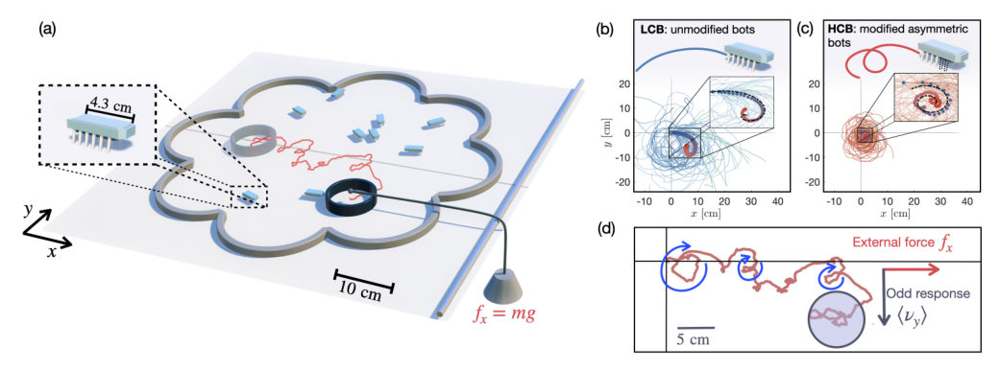
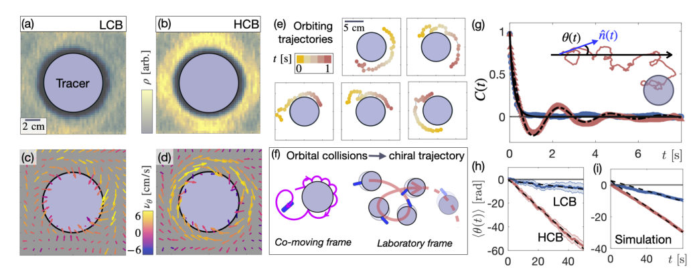
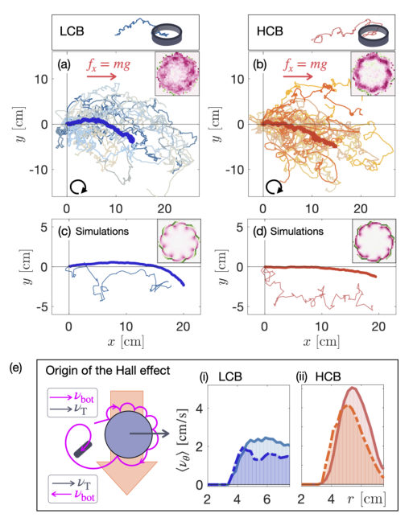
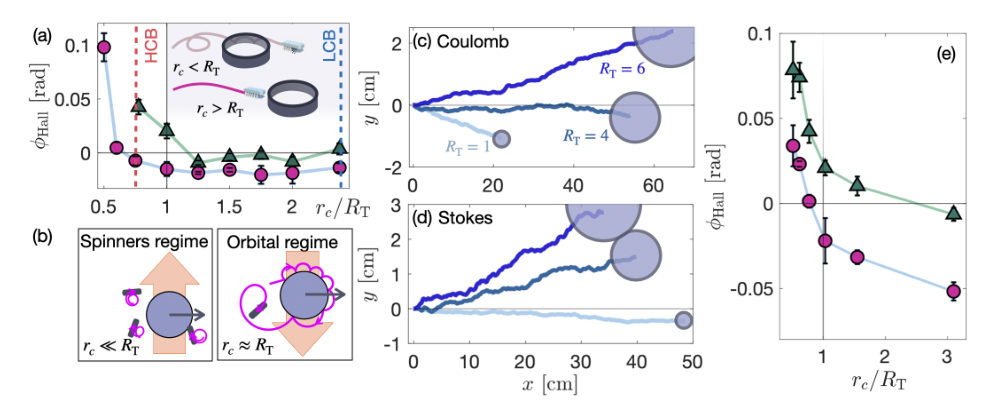
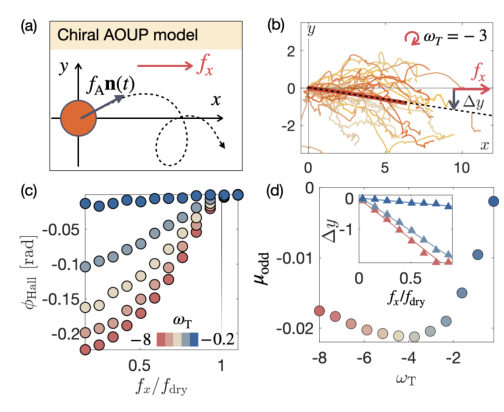
Summary. This paper demonstrates how chirality can be transferred from an active environment to a passive object, leading to a spontaneous Hall-like transverse motion. It reveals that nonlinear friction is the key mechanism that rectifies chiral fluctuations into macroscopic transport. The findings suggest potential applications in the selective sorting of particles based on their size.
Why it may be interesting. not directly relevant
Main problem. Understanding the microscopic mechanisms behind chirality transfer and the emergence of 'odd transport' (a Hall-like transverse drift) in a passive tracer embedded in a chiral active bath.
Main result. The study identifies that local collisions transfer chiral dynamics to the tracer and that nonlinear (Coulomb) friction rectifies these fluctuations into a macroscopic transverse response, which is non-monotonic with respect to the chirality radius.
Method. A combination of table-top experiments using active 'bristle-bots', many-body numerical simulations, and a reduced coarse-grained chiral active Ornstein-Uhlenbeck particle (AOUP) model.
Model / system. A 2D active granular bath of self-propelled 'bristle-bots' (active particles) containing a passive, symmetric 3D-printed tracer, subject to an external driving force and nonlinear substrate friction.
Key observables. Hall angle (phi_Hall), odd mobility (mu_odd), tracer trajectory autocorrelation functions, and local velocity/density fields around the tracer.
Important parameters / regimes. Ratio of chirality radius to tracer radius (r_c/R_T), chirality (omega), driving force (f_x), and the type of friction (Coulomb vs. Stokes).
Assumptions / limitations. The system is treated as a 2D active bath; the collision-induced reorientation can be modeled via a single-collision experiment; the friction is primarily governed by nonlinear substrate effects.
Figures summary. Fig 1 shows the experimental setup and bot/tracer trajectories; Fig 2 illustrates local density and velocity flows around the tracer; Fig 4 shows the Hall angle as a function of the r_c/R_T ratio; Fig 6 characterizes individual bot dynamics and chirality.
Paper structure. The paper introduces the phenomenon of chirality transfer, describes the experimental and simulation platforms, analyzes the mechanism of collision-induced transport, explores the role of nonlinear friction, and concludes with implications for particle sorting.
Chirality, or the breaking of mirror symmetry, appears across all scales in nature, from molecular conformations to the dynamics of bacterial collectives. Environments composed of such symmetry-breaking constituents can give rise to emergent physical phenomena, particularly in the transport and response of embedded tracers. Yet it remains unclear how chiral environments influence such tracers and through which microscopic mechanisms anomalous responses emerge. Here, we present a particle-resolved study of these systems, demonstrating chirality transfer and odd transport of an object embedded in a chiral active bath. In a rheological experiment, a symmetric passive tracer is driven through collisions with the particles of a non-equilibrium chiral bath. Combining table-top experiments, many-body simulations, and a reduced coarse-grained theory, we demonstrate that local collisions transfer chiral active dynamics to the tracer, which displays circular trajectories. We show that the same mechanism gives rise to a systematic transverse drift under a constant pulling force. Crucially, we identify nonlinear friction as an essential factor that rectifies these transferred chiral active fluctuations into a macroscopic odd response. Our results reveal a microscopic mechanism for odd transport in chiral active matter and provide general insights into transverse transport in driven non-equilibrium systems.
Authors: Emmanuel Akame Mfoumou, David Holcman
Type: theory · Category: statistical mechanics · PDF: https://arxiv.org/pdf/2605.25295v1
Analysis basis: full PDF text, analyzed in chunks
Topic relevance: methods for driven-dissipative 2/5
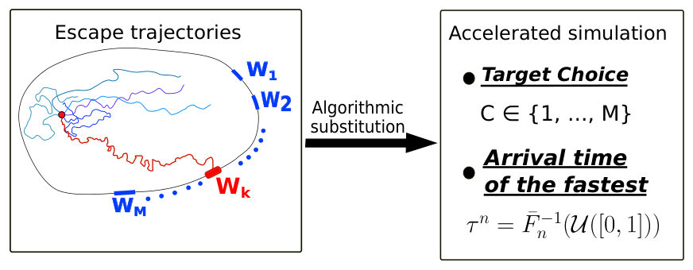
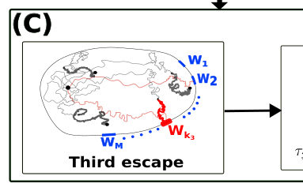
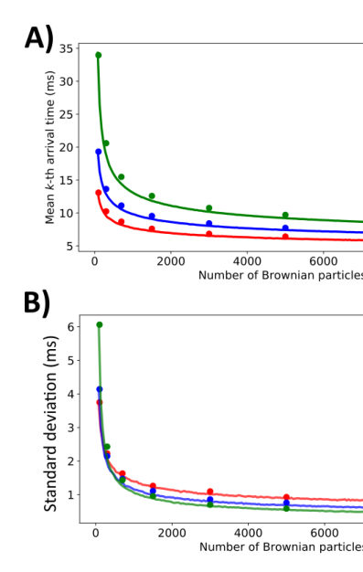
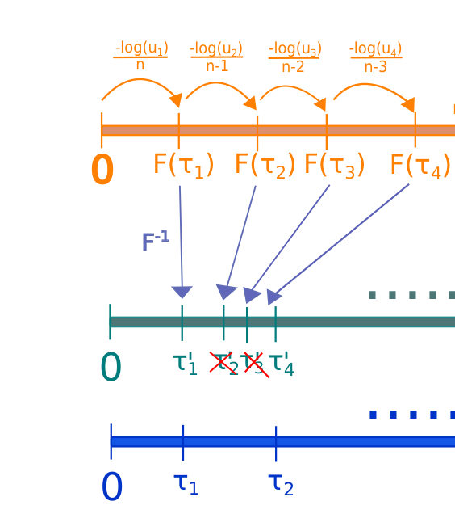
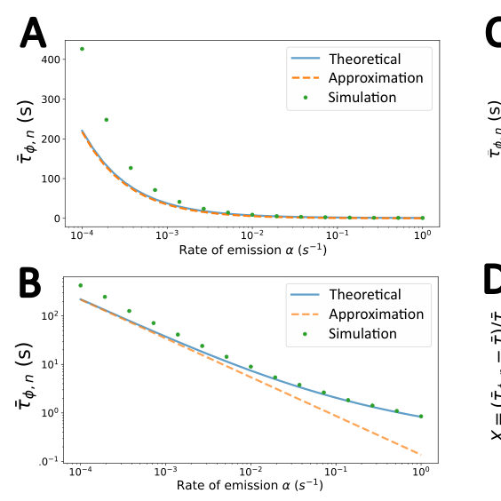
Summary. This paper introduces a highly efficient algorithm for simulating the earliest arrival events in large populations of diffusing particles. By using asymptotic distributions instead of full trajectory tracking, it achieves orders-of-magnitude speedups for complex scenarios like temporal injection and multi-target competition. This is particularly useful for modeling signal initiation in molecular and biological systems.
Why it may be interesting. not directly relevant
Main problem. Simulating extreme first-passage events, where the first among a large population of diffusing particles reaches a target, is computationally prohibitive using standard Brownian dynamics.
Main result. The authors developed an accelerated, trajectory-free simulation framework that generates the first k arrival times with a runtime scaling linearly with k and independent of the total particle number N.
Method. A recursive inverse transform algorithm that exploits short-time asymptotic expansions of single-particle survival probabilities and utilizes the Lambert W function for explicit inversion.
Model / system. Brownian motion of N independent particles in 1D, 2D, and 3D bounded domains with localized absorbing targets, including extensions for time-dependent emission profiles and particle killing.
Key observables. First arrival times, order statistics of arrival times, Mean First Arrival Time (MFAT), and splitting probabilities.
Important parameters / regimes. Number of particles (N), number of arrivals (k), diffusion coefficient (D), geodesic distance (delta), emission rate (alpha), and killing rate (gamma).
Assumptions / limitations. The framework assumes the existence of known or computable short-time asymptotic approximations for the single-particle survival probability and that targets are small and well-separated.
Figures summary. Figure 1 shows the core concept of replacing trajectories with sampling; Figure 2 illustrates the recursive sampling procedure; Figure 3 shows validation against Brownian simulations; Figure 5 compares MFAT in slow/fast regimes; Figure 6 shows the impact of particle killing on arrival distributions.
Paper structure. The paper introduces the computational challenge, presents a recursive algorithm for instantaneous emission, extends the framework to time-dependent injection and particle killing, provides analytical scaling for MFAT, and validates the method against traditional Brownian dynamics.
Fastest arrival events, where the first among many diffusing particles reaches a target, are central in triggering signal initiation in molecular stochastic systems. Classical approaches to simulate such events rely on full trajectory generation of all particles, leading to prohibitive computational costs in the large particle number regime. In this work, we present a general simulation framework for efficiently generating order statistics of arrival times by exploiting asymptotic first-passage distributions. This framework applies to diffusion processes in bounded domains with localized absorbing targets, for which short-time first-passage asymptotics are available, such as Brownian motion in dimensions one, two, and three. Starting with the case of instantaneous emission, we derive and implement a recursive inverse transform algorithm to simulate the first $k$ arrivals without tracking particle trajectories. We extend this algorithm to time-dependent emission profiles via an iterative approach, enabling the simulation of extreme statistics in systems with temporal injection, ranging from rapid to prolonged emission. Additionally, we provide asymptotic estimates of the mean fastest arrival time. To conclude, the present acceleration algorithm which bypasses Brownian simulations of trajectories can be used for spatial reaction networks, rare event detection, or diffusion-controlled activation.
Authors: Takahiro Misawa
Type: theory · Category: numerical methods · PDF: https://arxiv.org/pdf/2605.24814v1
Analysis basis: full PDF text, analyzed in chunks
Topic relevance: methods for driven-dissipative 2/5
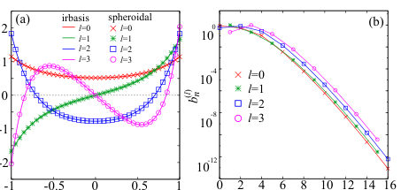
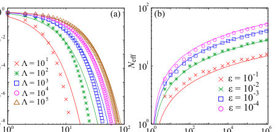
Summary. This paper provides the first analytic explanation for why the Intermediate Representation (IR) basis is so efficient at compressing imaginary-time Green functions. By identifying a finite-Laplace-transform structure, the author shows that the basis is linked to oblate spheroidal wave functions. This explains the logarithmic growth of the effective rank for fermions and its saturation for bosons.
Why it may be interesting. It provides a rigorous mathematical foundation for a widely used numerical technique in many-body simulations, connecting the efficiency of Green's function compression to classical problems in signal processing and special functions.
Main problem. The paper seeks to provide an analytic explanation for the compression capability of the Intermediate Representation (IR) basis used in many-body physics, specifically why its effective rank grows only logarithmically with inverse temperature for fermions and saturates for bosons.
Main result. The author reveals that the IR kernel possesses a finite-Laplace-transform structure, allowing IR eigenfunctions to be expanded in terms of oblate spheroidal wave functions, which analytically explains the rapid decay of singular values and the specific scaling of the effective rank.
Method. The study employs Singular Value Decomposition (SVD) of imaginary-time-frequency kernels, reduces the problem to a generalized eigenproblem via a finite Laplace transform, and uses Sturm-Liouville operator theory to map the problem to oblate spheroidal wave functions.
Model / system. The study focuses on quantum many-body systems described by Matsubara Green functions for both fermionic and bosonic statistics in the imaginary-time domain.
Key observables. Singular values (s_l), effective rank (N_eff), and the IR kernel decay rate.
Important parameters / regimes. Inverse temperature (beta), frequency cutoff (omega_max), dimensionless parameter (Lambda = beta * omega_max), and the threshold (epsilon) for singular value truncation.
Assumptions / limitations. The mathematical derivation assumes smooth functions and test functions, and that boundary terms vanish during integration by parts.
Figures summary. Figure 1 compares direct SVD with the new spheroidal expansion and shows the decay of expansion coefficients. Figure 2 shows the agreement between predicted and actual singular value decay and demonstrates the logarithmic scaling of the effective rank with Lambda.
Paper structure. The paper introduces the problem of IR compression, develops a mathematical framework reducing the IR kernel to a finite Laplace transform, demonstrates the connection to oblate spheroidal wave functions, provides asymptotic scaling analysis for fermionic and bosonic regimes, and includes appendices for the formal proofs of operator commutation and reconstruction formulas.
Information compression plays a central role in diverse fields of modern science and technology, from communication theory to machine learning. In condensed-matter physics, the intermediate representation (IR) basis has recently been developed as an efficient method for compressing imaginary-time Green functions, which are fundamental quantities for describing quantum many-body systems. This compression relies on the rapid decay of the singular values with the basis index and the unusually weak growth of the effective rank with inverse temperature. Because of these useful features, the IR basis is now widely used as a standard method in quantum many-body calculations. However, the analytic origin of its compression capability has remained unclear. Here we uncover a finite-Laplace-transform structure underlying the IR kernel, which reveals that the eigenfunctions of the IR kernel admit a natural expansion in terms of classical special functions, the oblate spheroidal wave functions. This finite-Laplace-transform structure also enables us to analytically clarify the compression mechanism of the IR basis. Our results provide a mathematical foundation for the compression of imaginary-time Green functions, connecting quantum many-body physics with theories of information compression and finite integral transforms.
Authors: Weicheng Fu, Yisen Wang, Yong Zhang, Hong Zhao
Type: theory · Category: statistical mechanics · PDF: https://arxiv.org/pdf/2605.25987v1
Analysis basis: full PDF text, analyzed in chunks
Topic relevance: non-equilibrium dynamics 2/5
Summary. This paper provides a simplified derivation of the Boltzmann distribution by showing it is the unique solution arising from energy-shift and coarse-graining-scale invariance. It demonstrates how complex thermodynamic phenomena, such as thermal expansion and internal pressure, emerge naturally from these fundamental symmetries in 1D models.
Why it may be interesting. not directly relevant
Main problem. Deriving the Boltzmann distribution for single-particle energy distributions in classical many-body Hamiltonian systems using a concise, alternative approach based on fundamental symmetries.
Main result. The Boltzmann factor is uniquely determined by the combination of coarse-graining-scale invariance and energy-shift invariance, which leads to the multiplicative Cauchy functional equation.
Method. The authors use a mathematical derivation based on functional equations (multiplicative Cauchy equation) and validate the theory using event-driven and Molecular Dynamics (MD) simulations.
Model / system. The study examines classical many-body Hamiltonian systems, specifically a 1D diatomic hard-core gas and a 1D nonlinear lattice chain with an asymmetric anharmonic potential.
Key observables. Single-particle velocity, energy, and spacing distributions; collision-time intervals; kinetic temperature; internal pressure; and mean relative displacement.
Important parameters / regimes. Inverse kinetic temperature (beta), mean energy per particle, mass difference (delta), anharmonic coefficients (alpha, lambda), and thermodynamic limits (N, L to infinity).
Assumptions / limitations. The system is a classical many-body Hamiltonian system in the thermodynamic limit, the distribution function is continuous, and the dynamics are sufficiently mixing/ergodic.
Figures summary. Figure 1 shows agreement between theoretical and numerical PDFs for velocity, energy, and collision time in a hard-core gas. Figure 2 shows convergence of kinetic energy and pressure and agreement in PDFs for a nonlinear lattice. Figure 3 shows analytical scaling of pressure and displacement versus temperature.
Paper structure. The paper introduces the derivation principles, applies them to a 1D hard-core gas, extends the framework to nonlinear lattice chains to show emergent properties like thermal expansion, and concludes with a discussion on ensemble equivalence and limitations.
We present a concise derivation of the Boltzmann form for single-particle energy distributions in classical many-body Hamiltonian systems. The derivation relies on two physical facts: coarse-graining-scale invariance of the empirical distribution and invariance under a uniform shift of the energy zero. These conditions uniquely yield the Boltzmann factor, whose parameter is fixed by the mean energy per particle. For separable Hamiltonians, the equilibrium weight factorizes into kinetic and configurational contributions sharing the same parameter, identified from the kinetic part as the inverse kinetic temperature. The principle extends to any physical quantity with a stationary distribution and translational invariance. It is illustrated in a one-dimensional diatomic hard-core gas and a nonlinear lattice chain, where it predicts velocity, energy, spacing, collision-time, and pressure-dependent displacement distributions in agreement with simulations. The lattice model further shows how harmonic elasticity, anharmonic corrections, internal pressure, and thermal expansion emerge from the same exponential equilibrium weights. Finally, the relationships among different ensembles are briefly discussed.
Authors: Anton Skott, Jan-Åke Larsson
Type: theory · Category: other · PDF: https://arxiv.org/pdf/2605.24446v1
Analysis basis: full PDF text, analyzed in chunks
Topic relevance: quantum measurements 2/5
Summary. This paper proves that the measurement-device dependence characteristic of Bohmian mechanics is not a prerequisite for Kochen-Specker contextuality. By using the Contextual Ontological Model, the authors show that a model can exhibit KS contextuality while having outcomes predictable solely from the model state. This allows for the independent study of these two distinct forms of quantum contextuality.
Why it may be interesting. not directly relevant
Main problem. The paper aims to clarify the relationship between two types of quantum contextuality: Kochen-Specker (KS) contextuality and Bohmian contextuality, specifically testing if Bohmian-type measurement dependence is a necessary requirement for KS contextuality.
Main result. The authors demonstrate that Bohmian contextuality is not a necessary condition for KS contextuality, as the Contextual Ontological Model (COM) reproduces KS predictions without requiring measurement-device dependence.
Method. The study uses a comparative analysis between Bohmian mechanics and the Contextual Ontological Model (COM) using a spin-1/2 system and simulated Stern-Gerlach measurement setups.
Model / system. The analysis focuses on a spin-1/2 particle system using Bohmian mechanics (trajectory-based) and the Contextual Ontological Model (an extension of stabilizer quantum mechanics) within a Stern-Gerlach apparatus framework.
Key observables. Particle position, spin states (up/down), and measurement outcomes (exit paths in a Stern-Gerlach device).
Important parameters / regimes. Magnetic pole polarity (SGS vs. SGN devices), particle velocity, and the Quantum Equilibrium Hypothesis.
Assumptions / limitations. The analysis assumes simplified, non-spreading rectangular wave packets, neglects y-direction dynamics, and is restricted to the framework of stabilizer quantum mechanics for the COM model.
Figures summary. Figure 1 shows Stern-Gerlach device scenarios for different spin/polarity combinations; Figure 2 illustrates Bohmian trajectories splitting at a threshold; Figure 3 depicts a three-stage measurement setup to demonstrate spin assignment dependence.
Paper structure. The paper introduces the two types of contextuality, defines the Bohmian and COM models, performs a comparative analysis of spin assignment in Stern-Gerlach setups, and concludes by showing the independence of the two concepts.
Quantum contextuality is a concept used to describe the property of hidden-variable theory that measurement outcomes predetermined by the hidden variables depend on the measurement context. The term measurement context can have different meanings, giving rise to different flavours of quantum contextuality. The first discovered flavour is Kochen-Specker (KS) contextuality where measurement outcomes will depend on what compatible measurements are jointly performed with the selected measurement. Another flavour, here to be compared with KS contextuality, is that referred to in Bohmian mechanics where outcomes of some specific measurements are not completely specified by the model state, but depend also on specifics of the measurement device used. It has been claimed that this type of Bohmian contextuality is necessary to enable KS contextuality in a hidden variable model. In this paper we show that this is not the case. The recently proposed Contextual Ontological Model (COM) [Hindlycke and Larsson, Phys. Rev. Lett. 2022] produces KS contextual predictions but does not have the Bohmian contextuality; the outcome of every measurement allowed by COM can be predicted from the model state itself. This distinguishes Bohmian contextuality from KS contextuality, and enables individual study of the two concepts.
Authors: Partha Ghose
Type: theory · Category: other · PDF: https://arxiv.org/pdf/2605.24494v1
Analysis basis: full PDF text, analyzed in chunks
Topic relevance: Keldysh / 2PI / non-Gaussian methods 2/5
Summary. This paper proposes that the fundamental entities of electrodynamics, such as particles and fields, are not primitive but emerge from underlying persistent stochastic processes. By using Kac-type dynamics, the author derives the Dirac and Maxwell equations as emergent descriptions of stochastic propagation. This provides a new ontological basis for QED where mass and charge are interpreted as scales of the underlying stochastic dynamics.
Why it may be interesting. This is interesting for researchers in open quantum systems and quantum optics because it provides a dynamical, stochastic interpretation of fundamental radiative processes like spontaneous and stimulated emission, viewing them as transitions between metastable stochastic modes.
Main problem. The paper seeks to provide a new underlying ontology for Quantum Electrodynamics (QED) by replacing the concept of primitive particles and fields with emergent structures arising from fundamental stochastic processes.
Main result. The author demonstrates that relativistic wave equations, such as the Dirac and Maxwell equations, can emerge from the analytic continuation of persistent Kac-type stochastic processes, where mass and charge are reinterpreted as persistence and coupling scales.
Method. The framework utilizes stochastic calculus, specifically Telegrapher-type dynamics and the analytic continuation of Poisson-driven switching rates, to derive relativistic wave equations from a process-theoretic foundation.
Model / system. The model is based on a persistent Kac-type stochastic process where particles move at a finite velocity $c$ and undergo random direction reversals. It treats the Dirac equation (spin-1/2) and Maxwell equations (spin-1) as different spin representations of the same underlying stochastic mechanism.
Key observables. Mass (as a persistence scale), electric charge (as a coupling scale), anomalous magnetic moment, and the transition between spontaneous and stimulated emission.
Important parameters / regimes. The reversal rate $\lambda$ (which generates mass via analytic continuation), the propagation speed $c$, and the stochastic coupling scale $e$.
Assumptions / limitations. The framework assumes that the new stochastic ontology is observationally equivalent to the existing predictions of standard QED and does not intend to modify its empirical successes.
Paper structure. The paper begins by introducing the process-theoretic approach and the Kac-type model, moves to the derivation of relativistic wave equations via analytic continuation, explores the emergence of mass and charge, discusses the interpretation of radiative effects like spontaneous emission, and concludes with implications for gauge symmetry and the Standard Model.
A process-theoretic approach to electrodynamics based on persistent Kac-type stochastic processes is developed. Finite-velocity stochastic propagation is taken as primary, while relativistic wave equations arise as emergent descriptions after analytic continuation of Telegrapher-type dynamics. The Dirac and Maxwell equations are interpreted as arising from closely related persistent propagation structures differing only in spin representation. The framework is not intended to modify the successful empirical predictions of quantum electrodynamics, but to provide a different underlying ontology. Particles and fields are not treated as primitive entities with fixed intrinsic properties. Instead, relativistic particle and field structures emerge as stable collective modes of coupled persistent stochastic dynamics. Mass and charge acquire interpretations respectively as persistence and stochastic coupling scales. Stationary bound states are interpreted as metastable persistent stochastic modes with nontrivial internal sector dynamics. Spontaneous emission is viewed as stochastic destabilization of such modes, while stimulated emission arises through resonant synchronization of persistent transition currents by incident radiation. Gauge interactions are introduced at the level of propagation-sector amplitudes prior to the emergence of observable probabilities. Radiative effects, including the anomalous magnetic moment of the electron, are interpreted as effective stochastic dressing of coupled matter--radiation processes. Some comments on gauge symmetry, equilibration and the Standard Model are also included.
Authors: Hudaiba Soomro, Minyoung Kim, Avani Vivrekar, M. A. Eriksson, Benjamin D. Woods, Mark Friesen
Type: theory · Category: quantum information and computing · PDF: https://arxiv.org/pdf/2605.24790v1
Analysis basis: full PDF text, analyzed in chunks
Topic relevance: non-equilibrium dynamics 2/5
Summary. This paper explores how the intrinsic spin-orbit coupling in Si/SiGe Wiggle Wells can be used for high-fidelity spin qubit control without external micromagnets. It demonstrates that despite the presence of random-alloy disorder, specific 'sweet spots' exist where gates are highly resistant to charge noise. The work provides a roadmap for achieving high-quality, micromagnet-free EDSR in silicon-based quantum computing.
Why it may be interesting. not directly relevant
Main problem. Investigating how random-alloy Ge disorder and electric-field fluctuations affect the stability and fidelity of Electric Dipole Spin Resonance (EDSR) in Si/SiGe Wiggle Wells.
Main result. The study identifies that while alloy disorder causes spatial randomization of the Rabi frequency, a new disorder-enabled valley-dipole mechanism can enhance EDSR, and high-fidelity gate operations are achievable at identified 'sweet spots' that are robust against charge noise.
Method. The authors use Schrieffer-Wolff transformations to derive an effective 2D spin Hamiltonian, Floquet theory for numerical verification, and statistical modeling (Cholesky decomposition) to simulate spatial maps of alloy disorder and noise impacts.
Model / system. The system consists of electron spin qubits in Si/SiGe 'Wiggle Well' quantum dots, featuring Ge concentration oscillations designed to enhance Dresselhaus spin-orbit coupling.
Key observables. Rabi frequency (orbital and valley contributions), valley splitting, dephasing rate (Gamma_Rabi), and the Rabi quality factor (Q_Rabi).
Important parameters / regimes. Ge oscillation wavelength (~1.6 nm), valley splitting (Ev), in-plane and vertical electric field fluctuations, and the ratio of valley-orbit coupling to valley splitting.
Assumptions / limitations. The energy hierarchy is assumed to be orbital splitting >> valley splitting >> Zeeman energy; vertical-lateral coupling is assumed to be weak; and the driving field is in the high-frequency limit.
Figures summary. Figures include probability distributions of Rabi frequency components, spatial maps of valley splitting and phases, and comparisons between analytical predictions and numerical Floquet theory results.
Paper structure. The paper introduces the Wiggle Well platform, derives an effective EDSR theory via Schrieffer-Wolff transformation, analyzes the impact of alloy disorder on Rabi frequency and dephasing, investigates the robustness of 'sweet spots' against in-plane and vertical charge noise, and concludes with a feasibility assessment for micromagnet-free gates.
Si/SiGe quantum wells that incorporate Ge concentration oscillations, known as long-period Wiggle Wells, have previously been shown to enhance the Dresselhaus spin-orbit coupling (SOC) of conduction-band electrons. Such intrinsic SOC is desirable when performing spin-qubit gate operations based on electric dipole spin resonance (EDSR) because it eliminates the need for external micromagnets. However, random-alloy disorder plays a key role in the valley physics of this materials system by spatially randomizing the valley phase $φ_{s,s}$, and has not been fully accounted for in recent EDSR analyses. Here, we show that alloy disorder affects EDSR in two main ways. First, the Rabi frequency $Ω$ acquires a dependence on the valley phase, given by $\cosφ_{s,s}$, which causes spatial randomization of $Ω$. Despite this variability, we show that fast EDSR can be achieved at most locations across a given sample. Second, a new Rabi driving mechanism emerges, enabled by valley dipoles that result from disorder and the hybridization of ground and excited valley states in response to an EDSR driving field. This mechanism is dominant in regions of low valley splitting. Alloy disorder can therefore strengthen EDSR, but it can also cause gradients in $Ω$ that lead to dephasing in the rotating frame. We explore this problem by first identifying "sweet spots," where EDSR is relatively insensitive to electric-field fluctuations. We then show that high-fidelity Rabi oscillations can be achieved in the presence of realistic charge noise. Our results demonstrate that the Wiggle Well is a promising platform for high-quality, micromagnet-free gate operations.
Authors: Jacek Gosciniak
Type: theory · Category: quantum information and computing · PDF: https://arxiv.org/pdf/2605.25911v1
Analysis basis: full PDF text, analyzed in chunks
Topic relevance: interference shaping light 2/5

Summary. The paper proposes a new recirculating 'bricks' mesh architecture for photonic integrated circuits that outperforms traditional feed-forward networks. It demonstrates that this architecture can implement complex quantum distillation protocols and Fourier transforms with significantly fewer components and reduced optical depth. This efficiency is crucial for scaling up photonic quantum computing by minimizing photon loss and decoherence.
Why it may be interesting. This is highly relevant for quantum optics and photonic QI as it proposes a hardware-efficient way to perform error-mitigation (distillation) and complex quantum signal processing with minimal loss and complexity.
Main problem. The high resource cost, propagation loss, and increased circuit depth associated with standard feed-forward photonic meshes when implementing complex distillation protocols and unitary transformations.
Main result. A recirculating bricks mesh architecture significantly reduces the number of required MZIs and optical depth compared to feed-forward networks, enabling efficient implementation of distillation and Fourier transform-based schemes.
Method. The study proposes a 2D recirculating mesh of Mach-Zehnder interferometers and uses scaling analysis, the Cooley-Tey algorithm for qFFT decomposition, and mathematical modeling of bosonic modal operators.
Model / system. A programmable photonic integrated circuit (PIC) featuring a two-dimensional bricks waveguide mesh of Mach-Zehnder interferometers (MZIs) that allows bidirectional signal propagation.
Key observables. Photon indistinguishability (measured via Hong-Ou-Mandel visibility), indistinguishability error rate, and optical depth.
Important parameters / regimes. Number of modes (m), number of photons (n), reconfiguration performance (number of realizable filters), and decoherence time.
Assumptions / limitations. The analysis assumes a regime where the number of photons equals the number of modes (n=m).
Figures summary. Figure 1 shows the integrated photonic chip and control electronics; Figure 2 illustrates various input-output implementations; Figures 3-4 detail distillation gate schematics and feed-forward comparisons; Figures 5-6 demonstrate the implementation of multi-mode DFTs using the bricks mesh.
Paper structure. The paper introduces the problem of photon indistinguishability, proposes the bricks mesh architecture, compares its efficiency and reconfiguration performance against standard meshes, and demonstrates its application to distillation protocols and Quantum Fourier Transforms.
General-purpose programmable photonic processors provide a flexible foundation for integrating various functionalities within a single chip. A two-dimensional bricks waveguide mesh of Mach Zehnder interferometers has been demonstrated to possess considerable potential in the domain of photonic neural networks and quantum signal processing. In this article, we propose an expansion of the available applications of recirculating bricks mesh architecture to distillation protocols necessary for quantum signal processing. These protocols are essential for the heralding of the output of single photons, which is characterized by a reduced distinguishability error rate. The demonstration will be made of a single programmable optical system's ability to realize various distillation protocols with reduced computational resource costs. The present study will concentrate on cascaded quantum interferometers and Fourier transform-based schemes. It will demonstrate that the bricks mesh can implement such schemes, which are unattainable using feed-forward networks, without the need for complex out-of-plane integration. The propagation of the signal in any direction, along with the utilization of all ports as both input and output, facilitates the execution of such transformations with minimal optical depth of the circuit and in time scales shorter than the decoherence time.
Authors: Koji Azuma
Type: theory · Category: statistical mechanics · PDF: https://arxiv.org/pdf/2605.25315v1
Analysis basis: full PDF text, analyzed in chunks
Topic relevance: entanglement & information structure 2/5
Summary. This paper provides a statistical-mechanical basis for understanding black hole entropy as coherent information. It explains how the absorption of even pure-state particles increases the horizon area and shows that the thermodynamic first law is maintained through the cancellation of quantum partition functions during Hawking radiation.
Why it may be interesting. not directly relevant
Main problem. Resolving inconsistencies in the coherent-information interpretation of black hole entropy, specifically explaining how the area increases when pure-state particles are absorbed and how the first law of black hole mechanics is preserved.
Main result. The author derives a microscopic statistical-mechanical foundation showing that the entropy increase from scrambling depends on energy flux, and proves that partition-function contributions from Hawking pairs cancel out to recover the standard black-hole first law.
Method. The study employs microcanonical state-counting, Taylor expansions of entropy around initial energy, and the application of grand-canonical ensembles and partition functions within Hawking's pair-creation framework.
Model / system. A scrambling Schwarzschild black hole modeled as a system composed of a positive subsystem (B+) and a negative subsystem (B-) containing negative-frequency bosons, utilizing Hawking's pair-creation picture.
Key observables. Horizon area (A_B), Hawking temperature (T_H), entropy increase (delta s_B+), and energy flux.
Important parameters / regimes. Hawking temperature, energy (E_P), angular momentum (L_P), charge (Q_P), and the scrambling process efficiency.
Assumptions / limitations. Assumes a 'small' infalling particle to allow for Taylor expansion, utilizes a leading reservoir approximation, and assumes the black hole scrambles infalling matter into its microscopic degrees of freedom.
Paper structure. The paper begins by defining the problem of entropy interpretation, introduces the partitioned black hole model, derives the entropy increase formula via microcanonical counting, demonstrates the cancellation of partition functions in Hawking radiation, and concludes by recovering the black-hole first law.
We present a microscopic statistical-mechanical foundation for interpreting the horizon area of a scrambling black hole as coherent information, equivalently negative conditional quantum entropy, in Hawking's pair-creation picture. We derive the entropy increase induced in a black hole when an infalling object is absorbed and scrambled into its microscopic degrees of freedom. Up to finite-reservoir corrections, this increase takes a canonical form at the Hawking temperature, regardless of the entropy carried by the infalling object. Applying this entropy formula to an incoming mode paired by time reversal with an outgoing Hawking radiation mode, we show that their partition-function contributions cancel in the coherent-information balance associated with the horizon area. The resulting area response is then determined only by the energy flux, in agreement with the black-hole first law.
Authors: Artemio González-López, Luis Martínez Alonso
Type: theory · Category: other · PDF: https://arxiv.org/pdf/2605.25857v1
Analysis basis: full PDF text, analyzed in chunks
Topic relevance: quantum measurements 2/5
Summary. This paper provides the first explicit, closed-form mathematical descriptions of photon position eigenfunctions in configuration space. It reveals that these wave functions are not localized at a single point but exhibit a singular plane of divergence. This work advances the theoretical understanding of how light is represented in coordinate space.
Why it may be interesting. This paper provides fundamental mathematical clarity on the spatial structure of photon wave functions, which is crucial for anyone working on the foundations of quantum optics and the localization of light.
Main problem. The paper addresses the long-standing problem of photon localization by seeking explicit, closed-form expressions for the eigenfunctions of the Hawton photon position operator in configuration space.
Main result. The authors derive closed-form expressions for the Landau-Peierls and Riemann-Silberstein position eigenfunctions using complete elliptic integrals, revealing that these eigenfunctions possess a singular plane of divergence and decay as inverse powers of distance.
Method. The study employs 3D Euclidean momentum space analysis, Fourier transforms, and the use of the Hertz superpotential, utilizing mathematical tools such as Gauss hypergeometric functions and regularization of divergent integrals.
Model / system. The system is a first-quantized theory of photons (massless particles with helicity sigma = +/- 1) described by a family of Hawton position operators and wave functions related to the Riemann-Silberstein and Landau-Peierls electromagnetic field representations.
Key observables. Momentum, Hamiltonian, Helicity, and Photon Position Eigenfunctions.
Important parameters / regimes. Helicity (sigma), wave function type parameter (alpha), scalar product parameter (beta), and the radial distance (r) and polar angle (theta).
Assumptions / limitations. The analysis is restricted to proper orthochronous Poincaré transformations and assumes a dynamical superselection rule for helicity; certain integrals require regularization for specific ranges of beta.
Figures summary. Figure 1 plots radial and angular components of the eigenfunctions to highlight the singular line at theta = pi/2; Figure 2 shows contour plots of the RS eigenfunction components in the (x, z) plane.
Paper structure. The paper begins by defining the photon position operator and wave functions in momentum space, proceeds to derive the configuration-space eigenfunctions using Fourier transforms and elliptic integrals, analyzes the resulting singularities and asymptotic behavior, and concludes with a Taylor expansion for the time-dependent Hertz superpotential.
The expressions of the eigenfunctions of the Hawton photon position operator in the configuration space are derived for several classes of wave function, including the Riemann-Silberstein and Landau-Peierls cases. Although these eigenfunctions have a simple form in momentum space, the explicit characterization of their representations in the configuration space is rather more involved. We provide closed expressions of these eigenfunctions in terms of linear combinations of the complete elliptic integrals $K(κ)$ and $E(κ)$ with modulus $κ$ depending on trigonometric functions of the polar angle. We show that they diverge not only at the value $\mathbf q$ of the position eigenvalue, but also on a plane containing $\mathbf q$ and that they decay as inverse powers of the distance from $\mathbf q$.
Authors: Walid El Maouaki, Alberto Marchisio, Muhammad Shafique
Type: both · Category: quantum information and computing · PDF: https://arxiv.org/pdf/2605.25728v1
Analysis basis: full PDF text, analyzed in chunks
Topic relevance: QC/QI experiment 2/5
Summary. This paper introduces Q-LEAK, a quantum algorithm designed to accelerate the formal verification of cryptographic side-channel countermeasures. By mapping leakage vulnerabilities to a Boolean satisfiability problem, the authors demonstrate that Grover-based search can provide a quadratic speedup over classical solvers. The approach was validated through both large-scale simulations and experiments on real IBM quantum hardware.
Why it may be interesting. not directly relevant
Main problem. The computational difficulty of formally verifying power side-channel leakage countermeasures in cryptographic algorithms due to the exponential scaling of classical SAT solvers.
Main result. The proposed Q-LEAK framework achieves a quadratic speedup using Grover's algorithm and successfully recovers leakage-inducing assignments in both noiseless simulations and on real IBM quantum hardware.
Method. The authors encode side-channel leakage models into Conjunctive Normal Form (CNF) and implement a quantum oracle using Grover's algorithm and the BBHT variant for unstructured search.
Model / system. The framework models cryptographic hardware implementations (like AES) using a one-bit leakage model under two-trace conditions, implemented via a reversible Grover oracle.
Key observables. Probability distributions of bitstrings (peaks for SAT, flat for UNSAT), Pearson chi-squared goodness-of-fit, and Hamming weight/distance leakage patterns.
Important parameters / regimes. Number of variables (n), clause density (rho), number of satisfying assignments (K), and the classical break-even exponent (alpha_min).
Assumptions / limitations. The study assumes a 1-bit leakage model and limited circuit unrolling (T=1); it also notes that current scalability is limited by oracle ancilla requirements and gate depth.
Figures summary. Figure 1 shows the verification pipeline; Figure 2 compares classical vs. quantum scaling; Figure 3/4 details the Q-LEAK framework and oracle construction; Figure 5 shows circuit sketches; Figure 6/7 displays probability distributions and hardware histograms; Figure 8 shows the classical break-even threshold.
Paper structure. The paper introduces the side-channel verification problem, defines the Q-LEAK algorithmic framework and oracle construction, provides a theoretical complexity analysis, presents simulation and hardware validation results, and concludes with scalability projections and limitations.
Formal verification of power side-channel leakage and its countermeasures in cryptographic algorithms is challenging, as SAT-based methods fail to scale on XOR-heavy, time-unrolled cryptographic circuits with realistic leakage models. We construct compact Conjunctive Normal Form (CNF) cases modeling one-bit leakage under two-trace conditions, linking key dependence and state evolution. Classical solvers quickly reach complexity limits, so we propose Q-LEAK, a quantum-based verification approach using Grover's algorithm, compiling each CNF into an oracle and applying amplitude amplification to search in O(sqrt(N)) oracle calls, with oracles that encode the two-trace leakage predicate and the CNF constraints. Benchmarking against classical SAT shows both potential gains and practical resource limits. In noiseless tests on 5-7 variable benchmarks, Q-LEAK consistently recovered a satisfying assignment within 1-4 tries, with marked bitstrings amplified clearly above the background distribution, exceeding 20 percent probability. The evaluation of Q-LEAK on real quantum hardware revealed at least one classically verified SAT assignment, despite the presence of noise. These results point to a potential path toward quantum-assisted verification of side-channel protections.
Authors: Collins O. Edet, Norshamsuri Ali, Rosdisham Endut, O. Abah
Type: theory · Category: statistical mechanics · PDF: https://arxiv.org/pdf/2605.24483v1
Analysis basis: full PDF text, analyzed in chunks
Topic relevance: non-equilibrium dynamics 2/5
Summary. This paper explores how the deformation of a Pöschl-Teller potential can be used to tune the performance of a quantum Otto engine and refrigerator. It shows that by adjusting the deformation parameter and potential depth, one can switch between optimal heat engine and refrigerator regimes. The findings suggest that q-deformed potentials provide a versatile platform for designing tunable quantum thermal machines.
Why it may be interesting. This work is relevant for researchers in quantum thermodynamics and open quantum systems as it demonstrates how tuning the underlying algebraic deformation and potential geometry can control the operational phases and efficiency of quantum thermal machines.
Main problem. Investigating how the parameters of a q-deformed modified Pöschl-Teller potential, specifically the deformation parameter q and the potential depth and width, affect the thermodynamic performance of a quantum Otto cycle.
Main result. The study identifies distinct performance regions where low-depth and high-deformation parameters favor heat engine efficiency, while high-depth and low-deformation parameters optimize refrigerator performance.
Method. The authors use an analytical approach involving a factorization method to derive energy spectra and wave functions, followed by statistical mechanics to calculate thermodynamic variables within a quasi-static Otto cycle framework.
Model / system. A quantum Otto machine using a q-deformed modified Pöschl-Teller oscillator as the working substance, governed by a Hamiltonian involving a deformation parameter q, a width parameter alpha, and a depth parameter Delta.
Key observables. Energy spectrum, wave functions, heat exchange (Qh, Qc), work output (Wq), efficiency (eta), and coefficient of performance (COP).
Important parameters / regimes. q (deformation parameter), alpha (potential width), Delta (potential depth), and reservoir temperatures (Th, Tc).
Assumptions / limitations. The analysis assumes a non-relativistic framework and a quasi-static cycle operating between two thermal reservoirs.
Figures summary. Figure 1 visualizes the potential shape for varying parameters; Figure 2 shows energy eigenvalue variations; Figure 3 presents an entropy-temperature diagram; Figures 4 and 5 show thermodynamic performance (work, heat, efficiency, COP) for engine and refrigerator modes.
Paper structure. The paper begins with the derivation of the q-deformed potential and its energy spectrum, followed by the application of the quantum Otto cycle framework, a systematic parameter analysis of engine and refrigerator regimes, and a discussion of the results.
We study the impact of the potential parameters of the q-deformed modified Pöschl-Teller potential on the thermodynamic performance of a quantum Otto cycle, where the $q$-deformed modified Pöschl-Teller potential serves as the working substance. Analytical expressions for the energy spectrum and wave functions are derived, enabling a systematic investigation of heat exchange, work output, efficiency, and coefficient of performance. We show that $q$-deformation modifies the energy spectrum and creates distinct performance regions in the ($q$, $Δ$) parameter space. Low ($Δ$) and high ($q$) favour optimal heat engine efficiency, whereas high ($Δ$) and low ($q$) improve refrigerator performance. The heat engine efficiency peaks in the low-($Δ$), high-($q$) regime. These results highlight the q-deformed modified Pöschl-Teller potential as a versatile and tunable platform for exploring potential parameter-driven effects in quantum thermal machines.
← Index · ← Previous · Next →